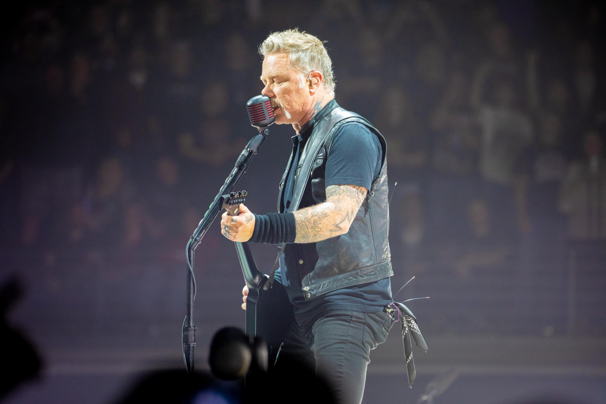
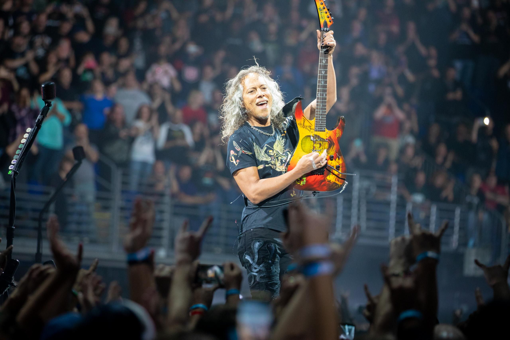
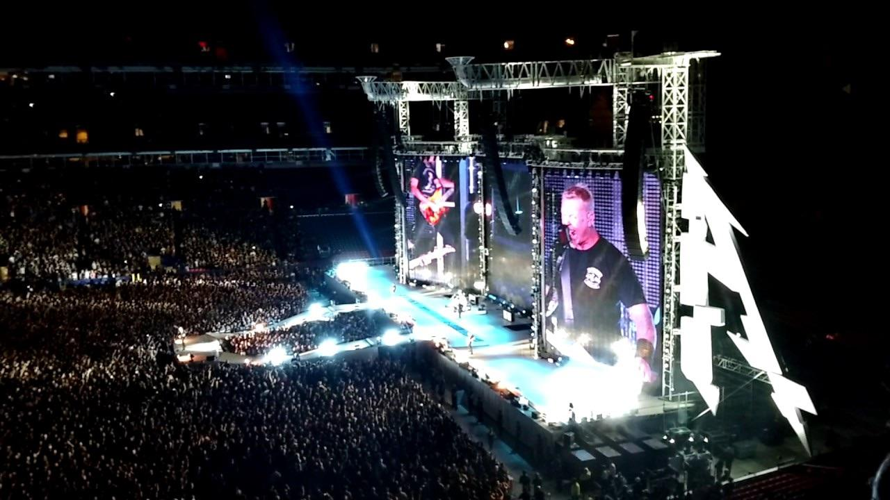
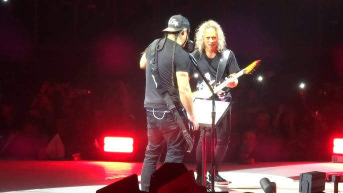

A WorldWired Tour a Metallica 2016 és 2019 között zajló világkörüli turnéja volt, amely a Hardwired… to Self-Destruct albumot népszerűsítette. A turné hatalmas siker lett, több kontinensen zajlott, és több millió rajongót vonzott.
A koncertek látványvilága modern és erőteljes volt: hatalmas LED-kivetítők, dinamikus fénytechnika és látványos pirotechnikai elemek jellemezték a fellépéseket. A zenekar aréna- és stadionkoncerteken egyaránt fellépett, így világszerte széles közönséghez jutott el.
A WorldWired Tour különlegessége, hogy a Metallica karrierjének teljes spektrumából válogatott dalokat játszott: a klasszikus thrash korszak számai mellett az új album dalai is hangsúlyos szerepet kaptak. A turné bizonyította, hogy a zenekar több évtized után is a világ egyik legnagyobb koncertzenekara.
Setlist és dalok
A WorldWired turnén a Metallica a legismertebb slágereit és az új album dalait is játszotta. A setlist városonként változott, de bizonyos dalok szinte minden koncerten elhangzottak.
| Gyakran játszott dalok |
|---|
| Enter Sandman |
| Master of Puppets |
| One |
| Seek & Destroy |
| Nothing Else Matters |
| Dalok a Hardwired albumról |
| Hardwired |
| Moth Into Flame |
| Atlas, Rise! |
| Halo on Fire |
| Spit Out the Bone |
A turné során a zenekar energikus, intenzív előadásokat nyújtott, és minden koncert egy erőteljes, közönséget megmozgató élmény volt.



